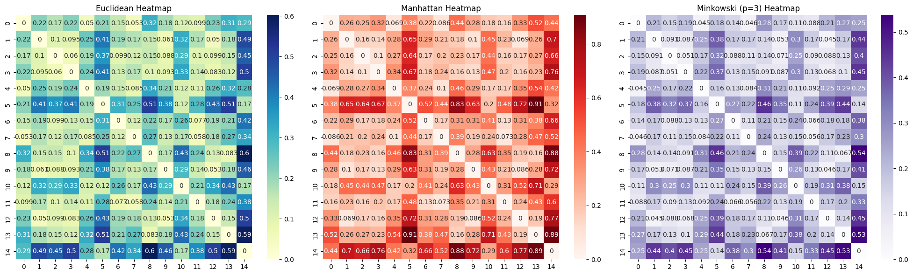

Pengukuran Jarak (Dissimilarity Matrix)#
Mengimplementasikan pengukuran jarak antar objek data berdasarkan file IRIS.csv dengan merujuk pada materi “Mengukur Jarak”.
import pandas as pd
import numpy as np
import seaborn as sns
import matplotlib.pyplot as plt
from scipy.spatial.distance import pdist, squareform
from sklearn.preprocessing import MinMaxScaler
# Dataset
df = pd.read_csv('IRIS.csv')
# Data Deskriptif
print("--- Statistik Deskriptif ---")
display(df.describe())
# Memisahkan fitur numerik
X = df.drop(columns=['species'])
--- Statistik Deskriptif ---
| sepal_length | sepal_width | petal_length | petal_width | |
|---|---|---|---|---|
| count | 150.000000 | 150.000000 | 150.000000 | 150.000000 |
| mean | 5.843333 | 3.054000 | 3.758667 | 1.198667 |
| std | 0.828066 | 0.433594 | 1.764420 | 0.763161 |
| min | 4.300000 | 2.000000 | 1.000000 | 0.100000 |
| 25% | 5.100000 | 2.800000 | 1.600000 | 0.300000 |
| 50% | 5.800000 | 3.000000 | 4.350000 | 1.300000 |
| 75% | 6.400000 | 3.300000 | 5.100000 | 1.800000 |
| max | 7.900000 | 4.400000 | 6.900000 | 2.500000 |
Normalisasi Data#
fitur numerik harus dinormalisasi. Kita menggunakan rumus: $\(z_{if} = \frac{x_{if} - min_f}{max_f - min_f}\)$ Langkah ini memastikan semua fitur (sepal/petal) berada dalam rentang [0, 1].
scaler = MinMaxScaler()
X_norm = scaler.fit_transform(X)
X_norm_df = pd.DataFrame(X_norm, columns=X.columns)
print("Data setelah Normalisasi (5 Baris Pertama):")
display(X_norm_df.head())
Data setelah Normalisasi (5 Baris Pertama):
| sepal_length | sepal_width | petal_length | petal_width | |
|---|---|---|---|---|
| 0 | 0.222222 | 0.625000 | 0.067797 | 0.041667 |
| 1 | 0.166667 | 0.416667 | 0.067797 | 0.041667 |
| 2 | 0.111111 | 0.500000 | 0.050847 | 0.041667 |
| 3 | 0.083333 | 0.458333 | 0.084746 | 0.041667 |
| 4 | 0.194444 | 0.666667 | 0.067797 | 0.041667 |
Menghitung Matriks Jarak (Dissimilarity Matrix)#
Kita akan menghitung tiga jenis jarak untuk melihat tingkat ketidaksamaan antar objek.
Euclidean: \(\sqrt{\sum |x_i - x_j|^2}\)
Manhattan: \(\sum |x_i - x_j|\)
Minkowski (\(p=3\)): \((\sum |x_i - x_j|^p)^{1/p}\)
# Menghitung jarak
dist_euclidean = squareform(pdist(X_norm, metric='euclidean'))
dist_manhattan = squareform(pdist(X_norm, metric='cityblock'))
dist_minkowski = squareform(pdist(X_norm, metric='minkowski', p=3))
# Menampilkan matriks 10x10 secara rapi
def show_matrix(matrix, title):
labels = [f'Data {i+1}' for i in range(10)]
matrix_df = pd.DataFrame(matrix[:10, :10], index=labels, columns=labels)
print(f"\n--- Matriks Jarak {title} (10 Sampel Pertama) ---")
display(matrix_df.round(3))
show_matrix(dist_euclidean, "Euclidean (L2)")
show_matrix(dist_manhattan, "Manhattan (L1)")
show_matrix(dist_minkowski, "Minkowski (p=3)")
--- Matriks Jarak Euclidean (L2) (10 Sampel Pertama) ---
| Data 1 | Data 2 | Data 3 | Data 4 | Data 5 | Data 6 | Data 7 | Data 8 | Data 9 | Data 10 | |
|---|---|---|---|---|---|---|---|---|---|---|
| Data 1 | 0.000 | 0.216 | 0.168 | 0.218 | 0.050 | 0.210 | 0.151 | 0.053 | 0.317 | 0.181 |
| Data 2 | 0.216 | 0.000 | 0.102 | 0.095 | 0.252 | 0.412 | 0.191 | 0.170 | 0.145 | 0.061 |
| Data 3 | 0.168 | 0.102 | 0.000 | 0.060 | 0.187 | 0.367 | 0.099 | 0.123 | 0.151 | 0.088 |
| Data 4 | 0.218 | 0.095 | 0.060 | 0.000 | 0.237 | 0.411 | 0.133 | 0.167 | 0.102 | 0.093 |
| Data 5 | 0.050 | 0.252 | 0.187 | 0.237 | 0.000 | 0.194 | 0.145 | 0.085 | 0.336 | 0.215 |
| Data 6 | 0.210 | 0.412 | 0.367 | 0.411 | 0.194 | 0.000 | 0.312 | 0.253 | 0.510 | 0.384 |
| Data 7 | 0.151 | 0.191 | 0.099 | 0.133 | 0.145 | 0.312 | 0.000 | 0.120 | 0.220 | 0.173 |
| Data 8 | 0.053 | 0.170 | 0.123 | 0.167 | 0.085 | 0.253 | 0.120 | 0.000 | 0.267 | 0.135 |
| Data 9 | 0.317 | 0.145 | 0.151 | 0.102 | 0.336 | 0.510 | 0.220 | 0.267 | 0.000 | 0.168 |
| Data 10 | 0.181 | 0.061 | 0.088 | 0.093 | 0.215 | 0.384 | 0.173 | 0.135 | 0.168 | 0.000 |
--- Matriks Jarak Manhattan (L1) (10 Sampel Pertama) ---
| Data 1 | Data 2 | Data 3 | Data 4 | Data 5 | Data 6 | Data 7 | Data 8 | Data 9 | Data 10 | |
|---|---|---|---|---|---|---|---|---|---|---|
| Data 1 | 0.000 | 0.264 | 0.253 | 0.323 | 0.069 | 0.384 | 0.222 | 0.086 | 0.444 | 0.281 |
| Data 2 | 0.264 | 0.000 | 0.156 | 0.142 | 0.278 | 0.648 | 0.292 | 0.211 | 0.181 | 0.100 |
| Data 3 | 0.253 | 0.156 | 0.000 | 0.103 | 0.267 | 0.637 | 0.170 | 0.201 | 0.225 | 0.173 |
| Data 4 | 0.323 | 0.142 | 0.103 | 0.000 | 0.336 | 0.673 | 0.184 | 0.236 | 0.156 | 0.125 |
| Data 5 | 0.069 | 0.278 | 0.267 | 0.336 | 0.000 | 0.370 | 0.236 | 0.100 | 0.458 | 0.295 |
| Data 6 | 0.384 | 0.648 | 0.637 | 0.673 | 0.370 | 0.000 | 0.523 | 0.437 | 0.829 | 0.631 |
| Data 7 | 0.222 | 0.292 | 0.170 | 0.184 | 0.236 | 0.523 | 0.000 | 0.170 | 0.306 | 0.309 |
| Data 8 | 0.086 | 0.211 | 0.201 | 0.236 | 0.100 | 0.437 | 0.170 | 0.000 | 0.392 | 0.194 |
| Data 9 | 0.444 | 0.181 | 0.225 | 0.156 | 0.458 | 0.829 | 0.306 | 0.392 | 0.000 | 0.281 |
| Data 10 | 0.281 | 0.100 | 0.173 | 0.125 | 0.295 | 0.631 | 0.309 | 0.194 | 0.281 | 0.000 |
--- Matriks Jarak Minkowski (p=3) (10 Sampel Pertama) ---
| Data 1 | Data 2 | Data 3 | Data 4 | Data 5 | Data 6 | Data 7 | Data 8 | Data 9 | Data 10 | |
|---|---|---|---|---|---|---|---|---|---|---|
| Data 1 | 0.000 | 0.210 | 0.149 | 0.194 | 0.045 | 0.181 | 0.141 | 0.046 | 0.284 | 0.170 |
| Data 2 | 0.210 | 0.000 | 0.091 | 0.087 | 0.250 | 0.383 | 0.174 | 0.167 | 0.140 | 0.053 |
| Data 3 | 0.149 | 0.091 | 0.000 | 0.051 | 0.173 | 0.321 | 0.088 | 0.106 | 0.136 | 0.071 |
| Data 4 | 0.194 | 0.087 | 0.051 | 0.000 | 0.218 | 0.365 | 0.127 | 0.149 | 0.091 | 0.087 |
| Data 5 | 0.045 | 0.250 | 0.173 | 0.218 | 0.000 | 0.159 | 0.126 | 0.084 | 0.309 | 0.209 |
| Data 6 | 0.181 | 0.383 | 0.321 | 0.365 | 0.159 | 0.000 | 0.272 | 0.223 | 0.455 | 0.347 |
| Data 7 | 0.141 | 0.174 | 0.088 | 0.127 | 0.126 | 0.272 | 0.000 | 0.113 | 0.210 | 0.146 |
| Data 8 | 0.046 | 0.167 | 0.106 | 0.149 | 0.084 | 0.223 | 0.113 | 0.000 | 0.239 | 0.127 |
| Data 9 | 0.284 | 0.140 | 0.136 | 0.091 | 0.309 | 0.455 | 0.210 | 0.239 | 0.000 | 0.149 |
| Data 10 | 0.170 | 0.053 | 0.071 | 0.087 | 0.209 | 0.347 | 0.146 | 0.127 | 0.149 | 0.000 |
Visualisasi#
Heatmap memudahkan kita melihat pola kemiripan. Warna yang semakin gelap (mendekati 0) menunjukkan bahwa kedua data tersebut sangat mirip atau identik.
fig, axes = plt.subplots(1, 3, figsize=(20, 6))
# Euclidean
sns.heatmap(dist_euclidean[:15, :15], annot=True, cmap='YlGnBu', ax=axes[0])
axes[0].set_title('Euclidean Heatmap')
# Manhattan
sns.heatmap(dist_manhattan[:15, :15], annot=True, cmap='Reds', ax=axes[1])
axes[1].set_title('Manhattan Heatmap')
# Minkowski
sns.heatmap(dist_minkowski[:15, :15], annot=True, cmap='Purples', ax=axes[2])
axes[2].set_title('Minkowski (p=3) Heatmap')
plt.tight_layout()
plt.show()

Kesimpulan Perhitungan#
Nilai Diagonal 0: Perhatikan bahwa diagonal matriks selalu bernilai 0. Hal ini karena jarak suatu objek terhadap dirinya sendiri adalah nol (\(d(i,i) = 0\)).
Simetri: Matriks ini simetris. Jarak antara objek 1 ke objek 2 sama dengan jarak objek 2 ke objek 1.
Perbandingan: Jarak Manhattan memberikan nilai yang lebih besar dibandingkan Euclidean karena menghitung selisih setiap dimensi secara linear tanpa “memotong jalan” secara diagonal.